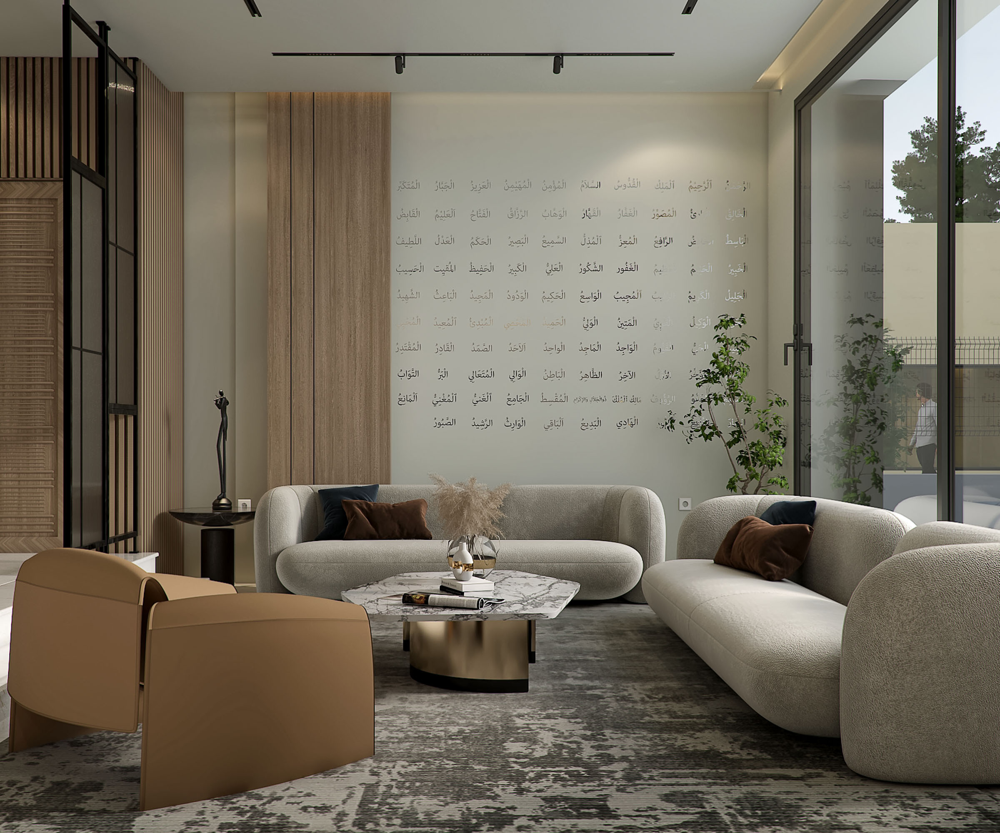

05 / Selected Work

Interior Architecture · Interior Design
Before materials, finishes or details, we understand how a space should work — its proportions, circulation, light, function and the character of the people who will inhabit it. The result is not decoration. It is a considered environment with a clear reason behind every decision.
Our point of viewOur work balances beauty with function. We refine rather than decorate, and we design with the realities of construction in mind. That discipline is what allows an interior to feel effortless when it is finally lived in.
04 / The Journey
One continuous process, structured to protect the original idea from the first spatial decision to the final detail.
We establish the spatial logic: proportion, circulation, hierarchy and the relationship between rooms.
Materiality, colour, furniture, lighting and detail are brought together into one coherent interior language.
Execution and supervision carry the approved design into the built environment with clarity and control.
05 / Selected Work
06 / Begin
For residential and commercial projects where the space, identity and execution need to be considered together.